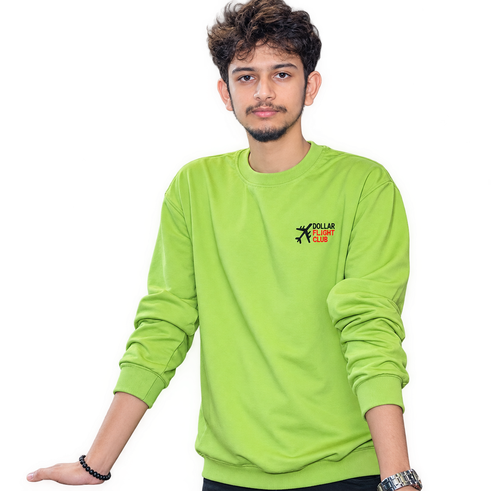

PRATIK / 2026PRATIKPOUDEL
I build the quietly powerful digital systems behind ambitious ideas.
See the work ↓SCROLL TO
ENTER THE
WORK
ENTER THE
WORK
( 01 )THE APPROACH
I take products from a loose idea to a working, deployed system — with the craft to make it feel inevitable.
Full-stack developer / AI engineerNext.js · FastAPI · Applied AI
( 02 )TOOLKIT / 2026
What I build
with.
A practical, production-ready stack — selected for the problem, never for decoration.
Interfaces
The logic
beneath.
Data, kept
in order.
Intelligence
in context.
From local
to live.
Systems that
grow calmly.
( 03 )SELECTED TIMELINE
Two years of
making things
real.
202604 months
AI Engineer / Contract
Agentics Labs
Built SAAR, an AI video and image generation platform end to end. Orchestrated ComfyUI generation workloads on RunPod GPU infrastructure and automated publishing with Postiz.
2024 — 202601 year, 02 months
Research & Development
Engineer
Samarth Technical Research & Innovations
Shipped 10+ full-stack applications for real businesses, from ERPs and booking platforms to exam portals. Mentored 10+ interns and brought in NPR 10+ lakh in revenue.
( 04 )SELECTED WORK
Work that
lives outside
the browser.
Enter the gallery below, then keep scrolling to move through the work.
Education / ERP↗
Eminent
Defence Academy
A full ERP replacing manual operations for a defence training academy — saving up to 30 hours every week.
200+ studentsVisit live site ↗
Education / Exam portal↗
Milaan
Educare
An education website and login-protected examination environment used by 100+ students.
Next.jsVisit live site ↗
AI / Hiring↗
Interview,
read deeper.
AI-tailored questions and real-time proctoring combined into a clear, merit-based candidate score.
React · FastAPI · OpenCVView repo ↗
AI / Hospitality↗
Hotel Booking
Chatbot
A conversational booking system with live availability and secure MCP tools connected to PostgreSQL.
RAG · MCP
Computer vision↗
Face
Attendance
Real-time facial-recognition attendance tracking, actively used by SATRI members.
FastAPI · OpenCVView repo ↗
Fitness / Web↗
The Boss
Gym
A bold, conversion-first site for a champion-style gym — programs, trainer profiles, pricing and instant sign-up.
Next.jsVisit live site ↗
Construction / Web↗
Yongshi
Builders
Marketing site for a construction and interiors brand — projects, services and a trust-first information architecture.
Next.jsVisit live site ↗
Wellness / Web↗
Nature Path
Yoga Retreat
A calm, light-footed site for a yoga retreat centre — quiet typography, generous imagery, fast on any network.
Next.js
SCROLL TO EXPLORE
08
( 05 )GET IN TOUCH
Let’s make
something move.
Available for freelance projects and thoughtful full-time roles. Have a good problem? I’m all ears.
pratikpdl104@gmail.com ↗